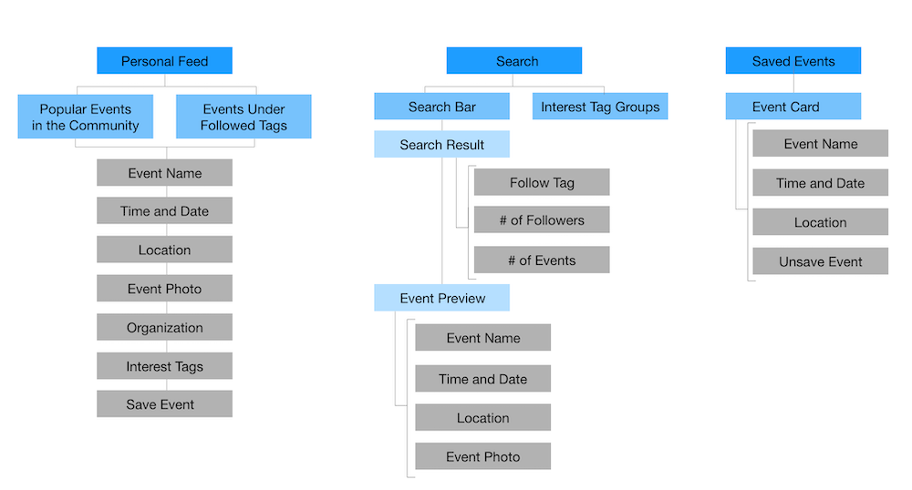
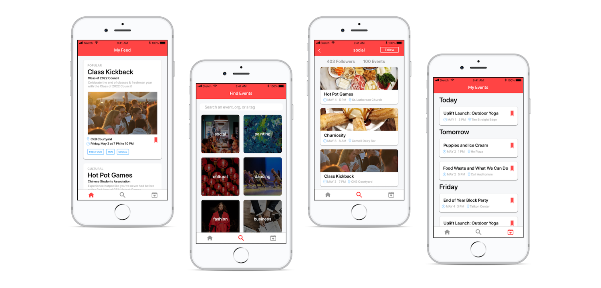

Role: UX Designer
Tools: Sketch
Duration: 2 Weeks (Hack Challenge)
Team: 1 frontend developer and 2 backend developers
Problem
Cornell is a community filled with diverse events and organizations. There is truly something for everyone-- if you know where to look. Students want to attend fun and interesting events on campus, but it is difficult to find and keep track of them due to the decentralized nature of how clubs advertise events. Some are advertised through Facebook, some through flyers, etc. Sometimes, students don't find out about a club until recruitment has ended. Our goal was to solve the problem of students missing out on events due to lack of information.
Discover
Getting to Know the User
The target audience was Cornell students on campus. In order to better understand our target user, I interviewed three people that fit the description.
I asked the following questions with the goal of familiarizing myself with the user's journey.
- How do you usually find and decide on which events to go to on campus?
- What has your experience been with finding events/clubs?
- How do you usually keep track of events to go to?
- What is the biggest pain point related to attending an event?
- What platforms/products do you usually use to find events? What problems have you faced with using this product for event-related activities?
Define
Summarizing the Journey
After the interviews, I summarized the current event-finding process of the typical Cornell student: checking out at Facebook or flyers, reading the time/location, and getting notified by Facebook or a calendar.
I identified students' main painpoints at each of the steps.
Develop
Focus
Based on the pain points, I decided on the solution areas that I wanted to focus on. I mainly wanted to address the problems of disorganized event discovery and scheduling.
Focus Areas
- Personalize recommendations to users based on their interests
- Help users discover new events and interests
- Allow users to keep track of their events in one place
Information Hierarchy
I based the three main pages of the app on the three focus areas.
Personal Feed: Recommends users events based on popularity and interest because those are the top things that students look for when deciding whether to attend an event.
Search: Gives the user the opportunity to find events intentionally and browse different categories.
Saved Events: Lets users view their planned events in chronological order.
Deliver
Prototype
Limitations and Future Considerations
Since this project was limited to a 2 week duration, I did not have the time to implement some of the features that I would have liked to. Ideally, users would be able to view the number of attendees for each event. I would have also like to expand the app to include pages for each club, which would feature links to upcoming events and related clubs. This would help users discover and keep up with clubs that they are interested in.
Over all, I very much enjoyed working with an interdisciplinary team to create a much-needed solution for our community.